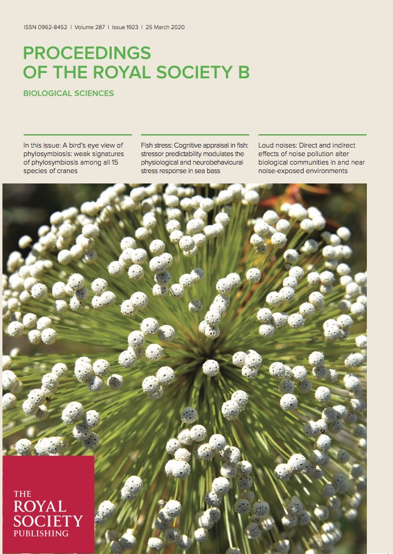

2022
Leal ES, Vasconcelos TNC, Tuberquia D, Soto-Gomez M, Michelangeli FA, Forzza RC, Mello‐Silva R. 2022. Phylogeny and historical biogeography of the Panama‐hat family (Cyclanthaceae, Pandanales). Taxon. [get PDF]
Vasconcelos TNC, O’Meara BC, Beaulieu JM. 2022. A flexible method for estimating tip diversification rates across a range of speciation and extinction scenarios. Evolution. [get PDF]
Palma-Silva C, Turchetto-Zolet AC, Fay MF, Vasconcelos TNC. 2022. Drivers of exceptional Neotropical biodiversity: an updated view. Botanical Journal of the Linnean Society, 199(1), 1-7. [get PDF]
Souza-Neto JD, Dos Santos EK, Lucas E, Vetö NM, Barrientos-Diaz O, Staggemeier VG, Vasconcelos TNC, Turchetto-Zolet AC. 2022. Advances and perspectives on the evolutionary history and diversification of Neotropical Myrteae (Myrtaceae). Botanical Journal of the Linnean Society. [get PDF]
Vasconcelos TNC, O’Meara BC, Beaulieu JM. 2022. Retiring “cradles” and “museums” of biodiversity. The American Naturalist, 199(2), 194-205. [get PDF]
Proença CEB, Tuler AC, Lucas EJ, Vasconcelos TNC, Faria JEQ, Staggemeier VG, de-Carvalho PS, Forni-Martins ER, Inglis PW, Mata LR, Costa IR. 2022. Diversity, Phylogeny and Evolution of the rapidly evolving genus Psidium L.(Myrtaceae, Myrteae). Annals of Botany. [get PDF]
2021
BFG. Vasconceos TNC. 2021. Brazilian Flora 2020: Leveraging the power of a collaborative scientific network. Taxon. [get PDF]
Vasconcelos TNC, Boyko JD, Beaulieu JM. 2021. Linking mode of seed dispersal and climatic niche evolution in flowering plants. Journal of Biogeography. [get PDF]
Santos LL, Forest F, Lima DF, Sales MF, Vasconcelos TNC, Staggemeier VG, Lucas E. 2021. Phylogenetic and Biogeographic Analysis in Myrcia Sect. Myrcia (Myrcia sl, Myrtaceae) with Focus on Highly Polyphyletic Myrcia splendens. International Journal of Plant Sciences, 182(9), 778-792. [get PDF]
Santos LL, Vasconcelos TNC, Sales MF, Lucas E. 2021. Three new species of Myrcia sect. Myrcia (Myrtaceae) from South America. Phytotaxa, 520(3), 249-256. [get PDF]
Maurin O, Anest A, Bellot S, Biffin E, Brewer G, Charles-Dominique T, Dodsworth S, Epitawalage N, Gallego B, Giaretta A, Goldenberg R, Gonçalves DJP, Graham S, Hoch P, Mazine F, Low YW, McGinnie C, Michelangeli FA, Morris S, Penneys DS, Pérez Escobar OA, Pillon Y, Pokorny L, Shimizu G, Staggemeier VG, Thornhill A, Tomlinson KW, Turner I, Vasconcelos TNC, Wilson PG, Zuntini AR, Baker WJ, Forest F, Lucas E. 2021. A nuclear phylogenomic study of the angiosperm order Myrtales, exploring the potential and limitations of the universal Angiosperms353 probe set. American Journal of Botany 108(7): 1087-1111 10.1002/ajb2.1699 [get PDF]
Dantas M, Leal B, Chaves C, Vasconcelos TNC, Versieux L, Palma-Silva C. 2021. Underlying microevolutionary processes parallel macroevolutionary patterns in ancient Neotropical Mountains. Journal of Biogeography [get PDF]
Melo LRF, Vasconcelos TNC, Reginato M, Caetano AP, Brito VLG. 2021. Evolution of stamen dimetrism in Melastomataceae, a large radiation of pollen flowers. Perspectives in Plant Ecology Evolution and Systematics (48) 125589 10.1016/j.ppees.2021.125589 [get PDF]
Lovo J, Alcantara S, Vasconcelos TNC, Sajo MC, Rudall PJ, Prenner G, Aguiar AJC, Mello-Silva R. 2021. Floral heterochrony and pollination biology in Trimezieae (Iridaceae): implications for evolutionary lability. American Journal of Botany [get PDF]
Rosa PO, Vasconcelos TNC, Lucas EJ, Proença CEB. 2021. Revisiting Glaziou and the Botany of the second Cruls Mission: three new species and 23 accepted species of Myrcia (Myrtaceae) collected from Goiás, Brazil and a detailed description of his “Goyaz” itinerary. Phytotaxa [get PDF]
2020
Proença CEB, Faria JEQ, Giaretta A, Lucas EJ, Staggemeier VS, Tuler AC, Vasconcelos TNC. 2020. Nomenclatural and taxonomic changes in tribe Myrteae (Myrtaceae) spurred by molecular phylogenies Heringeriana 14(1): 49−61. [get PDF]

Colli-Silva M, Reginato M, Cabral A, Forzza RC, Pirani JR, Vasconcelos TNC. 2020. Evaluating shortfalls in biodiversity documentation for the Atlantic Forest, the most diverse and threatened Brazilian phytophysiognomic domain. Taxon - 10.1002/tax.12239 [get PDF]
Sperotto P, Acevedo-Rodríguez P, Vasconcelos TNC, Roque N. 2020. Towards a standardization of the terminology for the climbing habit in plants. The Botanical Review - 10.1007/s12229-020-09218-y [get PDF]
Reginato M, Vasconcelos TNC, Kriebel R, Simões A. 2020. Is dispersal mode a driver of diversification and geographical distribution in the diverse tropical plant family Melastomataceae? Molecular Phylogenetics and Evolution 106815 - 10.1016/j.ympev.2020.106815 [get PDF]
Vasconcelos TNC, Alcantara S, Andrino C, Forest F, Reginato M, Simon M, Pirani JR. 2020. Plant diversification in the highly diverse campo rupestre reveals rapid and recent radiations in ancient mountaintops. Proceedings of the Royal Society B 287, 20192933. - 10.1098/rspb.2019.2933 [get PDF]
Almeida RBP, Antar GM, Vasconcelos TNC, Santos LL, Amorim BS. 2020. Myrcia lucasae (Myrtaceae), a new species from the campo rupestre of Chapada Diamantina, Brazil. Phytotaxa 435 (3), 227–234. - 10.11646/phytotaxa.435.3.2 [get PDF]
Aguiar A, Melo G, Vasconcelos TNC, Goncalves R, Giuliano L, Martins A. 2020. Biogeography and early diversification of Tapinotaspidini oil-bees support presence of Paleocene savannas in South America. Molecular Phylogenetics and Evolution 143, 106692 - 10.1016/j.ympev.2020.106815 [get PDF]
Vasconcelos TNC, Lucas EJ, Conejero M, Giaretta A, Prenner G. 2020. Convergent evolution in calyptrate flowers of Syzygieae (Myrtaceae). Botanical Journal of the Linnean Society 192 (3), 498–509 - 10.1093/botlinnean/boz105 [get PDF]
2019
Lucas EL, Holst B, Sobral M, Mazine FF, Nic Lughadha EM, Proença CEB, Vasconcelos TNC. 2019. A new infra-generic classification of the predominantly South American tribe Myrteae (Myrtaceae) Systematic Botany 44(3): 560–569. - 10.1600/036364419X15620113920608 [get PDF]
Vasconcelos TNC, Prenner G, Lucas EJ 2019. A systematic overview of floral diversity in Myrteae (Myrtaceae). Systematic Botany 44(3): 570–591. - 10.1600/036364419X15620113920617 [get PDF]
Giaretta A, Vasconcelos TNC, Mazine FF, Faria JEQ, Flores R, Holst B, Sano PT, Lucas E. 2019. Calyx (con)fusion in a hyper-diverse genus: parallel evolution of unusual flower patterns in Eugenia (Myrtaceae). Molecular Phylogenetics and Evolution 139, 106553. - 10.1016/j.ympev.2019.106553 [get PDF]

Amorim BS, Vasconcelos TNC, Souza G, Alves M, Antonelli A, Lucas E. 2019. Advanced understanding of phylogenetic relationships, morphological evolution and biogeographic history of the mega-diverse plant genus Myrcia and its relatives (Myrtaceae: Myrteae). Molecular Phylogenetics and Evolution 138, 65–88. - 10.1016/j.ympev.2019.05.014 [get PDF]
Nic Lughadha E, Staggemeier V, Vasconcelos TNC, Walker B, Canteiro C, Lucas E. 2019. Harnessing the potential of integrated systematics for the conservation of taxonomically complex, megadiverse plant groups. Conservation Biology 33, 511–522. - 10.1111/cobi.13289 [get PDF]
De la Estrella M, Buerki S, Vasconcelos TNC, Lucas E, Forest F. 2019. The Role of Antarctica in Biogeographical Reconstruction: A Point Of View. International Journal of Plant Sciences 180: 63–71. - 10.1086/700581 [get PDF]
Colli-Silva M, Vasconcelos TNC, Pirani JR. 2019 Outstanding plant endemism levels strongly support the recognition of campo rupestre bioregions in mountaintops of eastern South America. Journal of Biogeography 46:1723–1733 - 10.1111/jbi.13585. [get PDF]
Vasconcelos TNC, Chartier M, Prenner G, Martins AC, Schönenberger J, et al. 2019. Floral uniformity through evolutionary time in a species-rich tree lineage. New Phytologist 221(3): 1597–1608 - 10.1111/nph.15453. [get PDF]
2018
Vasconcelos TNC, Lucas EJ, Faria JE, Prenner G. 2018. Floral heterochrony promotes flexibility of reproductive strategies in the morphologically homogeneous genus Eugenia (Myrtaceae). Annals of Botany 121: 161–174. - 10.1093/aob/mcx142 [get PDF]
Mazine FF, Faria JEQ, Giaretta A, Vasconcelos TNC, Forest F, Lucas E. 2018 Phylogeny and biogeography of the hyper diverse genus Eugenia (Myrtaceae: Myrteae), with emphasis on sect. Umbellatae, the most unmanageable clade. Taxon 67(4): 752–769. - 10.12705/674.5 [get PDF]
BFG 2018, Vasconcelos TNC. 2018 Brazilian Flora 2020: Innovation and collaboration to meet Target 1 of the Global Strategy for Plant Conservation (GSPC) Rodriguesia 69(4): 1513–1527. - 10.1590/2175-7860201869402 [get PDF]
Lucas EJ, Amorim BS, Lima DF, Lima-Lourenço AR, Nic Lughadha EM, Proença CEB, Rosa PO, Rosário AS, Santos LL, Santos MF, Souza MC, Staggemeier VG, Vasconcelos TNC, Sobral M. 2018. A new infra-generic classification of the species-rich Neotropical genus Myrcia s.l. Kew Bulletin 73 (1): 9. - 10.1007/S12225-017-9730-5 [get PDF]
Vasconcelos TNC, Lucas EJ, Peguero B. 2018. One new species, two new combinations and taxonomic notes on the All-spice genus Pimenta (Myrtaceae) from Hispaniola. Phytotaxa 348 (1): 32–40. - 10.11646/phytotaxa.348.1.4 [get PDF]
2017
Vasconcelos TNC, Proença CE, Ahmad B, Aguilar DS, Aguilar R, Amorim BS, et al. 2017. Myrteae phylogeny, calibration, biogeography and diversification patterns: Increased understanding in the most species rich tribe of Myrtaceae. Molecular Phylogenetics and Evolution 109: 113–137. - 10.1016/j.ympev.2017.01.002 [get PDF]
Vasconcelos TNC, Prenner G, Santos MF, Wingler A, Lucas EJ. 2017. Links between parallel evolution and systematic complexity in angiosperms: A case study of floral development in Myrcia s.l. (Myrtaceae). Perspectives in Plant Ecology, Evolution and Systematics 24: 11–24. - 10.1016/j.ppees.2016.11.001 [get PDF]
2015
Vasconcelos TNC, Silva JS, Ianhez ML, Proença CE. 2015. Floristic survey of the Brazilian Ages Memorial: a Cerrado sensu stricto area with an educational relevance. Check List 11(4): 1689. 10.15560/11.4.1689 [get PDF]
Vasconcelos TNC, Proença CE. 2015. Floral cost vs. floral display: Insights from the megadiverse Myrtales suggest that energetically expensive floral parts are less phylogenetically constrained. American Journal of Botany 102(6): 900–909. - 10.3732/ajb.1400509 [get PDF]
Vasconcelos TNC, Prenner G, Bünger MO, De-Carvalho PS, Wingler A, Lucas EJ. 2015. Systematic and evolutionary implications of stamen position in Myrteae (Myrtaceae). Botanical Journal of the Linnean Society 179(3): 388–402. 10.1111/boj.12328 [get PDF]
2012
Vasconcelos TNC, Silva JS, Proença CEB. 2012. Testando a função PPI: análise de previsibilidade fenológica utilizando dados de herbário. Heringeriana 6(1): 66–69. [get PDF]